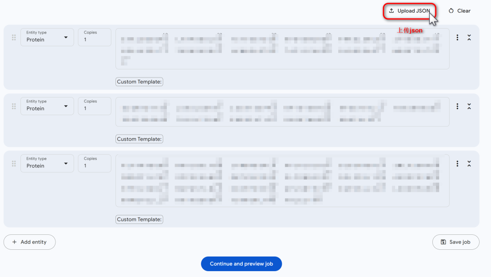
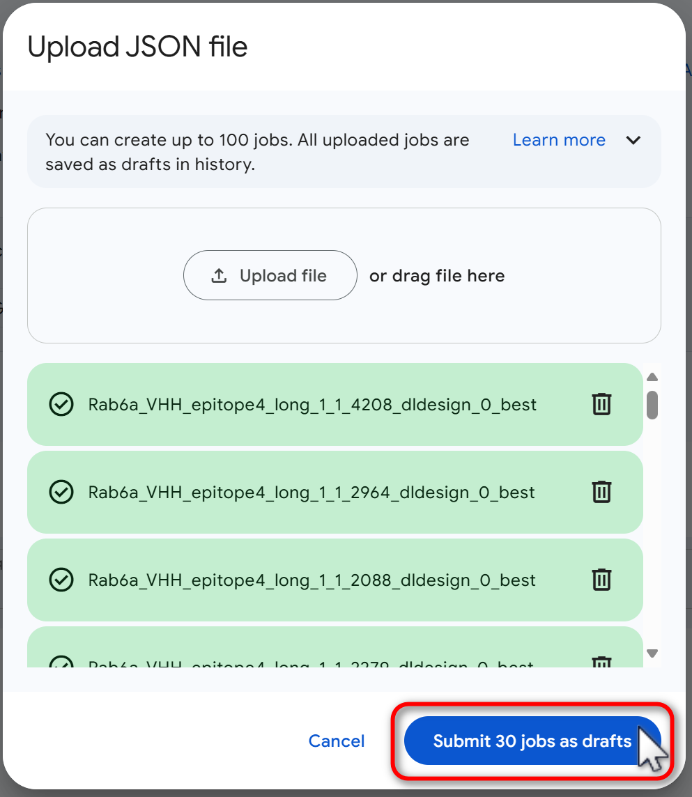
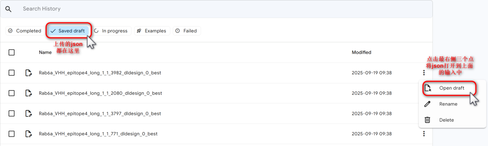
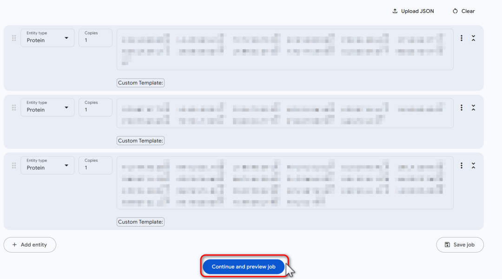
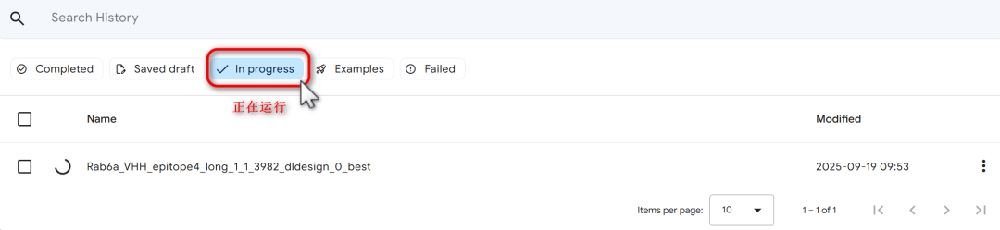
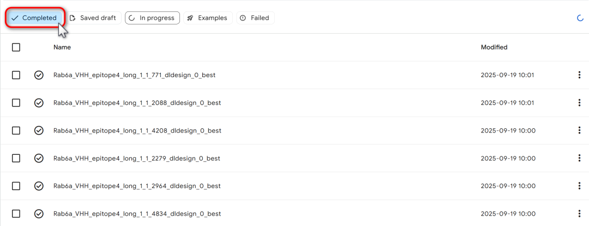

与前代主要预测蛋白质结构不同，AlphaFold 3 的核心突破在于其卓越的通用性。它能够高精度地预测蛋白质、DNA、RNA、配体（小分子）、离子以及翻译后修饰（PTMs）等几乎所有生命分子类型的单一结构，更重要的是，它能以前所未有的准确度描绘这些分子之间如何相互作用、形成复杂的复合物，例如抗体-抗原结合、药物-靶点相互作用以及蛋白质与核酸的复合体。
这一能力得益于其全新的扩散架构（类似图像生成模型DALL-E和Midjourney的技术），使模型能够生成原子级精度的复杂三维结构。然而，这种强大的能力也带来了极高的计算成本。对于本地用户而言，进行结构预测，尤其是大型蛋白复合物时，速度往往受限于硬件性能（如GPU显存、算力等），导致预测过程异常缓慢，甚至需要数天时间。这与 AlphaFold Server 网页版形成了鲜明对比，后者依托于Google强大的云端计算集群和专门优化的硬件，能够几乎不受限地快速分配资源，通常在几分钟到几小时内就能返回结果，为用户提供了高效且便捷的预测体验。
josn 文件格式
{"name": "Test Fold Job Number One","modelSeeds": [],"sequences": [...],"dialect": "alphafoldserver","version": 1}
配置文件采用 JSON 格式，最外层必须是一个列表，即使只有一个任务也需要用单元素列表包裹：
[ { ...单个任务的配置... } ]每个任务是一个字典对象，包含以下核心字段：
name (字符串)：任务名称，用于标识不同的预测任务
sequences (列表)：包含所有待预测分子的数组
dialect (字符串)：必须设置为 "alphafoldserver"
version (数字)：固定为 1，表示配置文件格式版本
modelSeeds (列表)：随机数种子数组，用于控制模型预测的可重复性
如果设置为空数组 []，系统会自动分配随机种子
可指定多个种子（如 [42, 123, 456]）以获得不同的构象采样
sequences 数组中的每个元素代表一个分子，使用 proteinChain 对象定义：
{"proteinChain": {"id": "链标识符","sequence": "氨基酸序列","count": 分子数量}}
id：分子链的唯一标识符（如：H=重链, L=轻链, T=靶标蛋白）
sequence：氨基酸序列（FASTA格式，仅包含字母，无文件头）
count：分子拷贝数，通常为 1（多聚体时可设置大于1的值）
实例：
[{"name": "name1","sequences": [{"proteinChain": {"id": "H","sequence": "VQLVQ","count": 1}},{"proteinChain": {"id": "L","sequence": "SALTQPASVSGS","count": 1}},{"proteinChain": {"id": "T","sequence": "ETRECIYYNANWELERT","count": 1}}],"modelSeeds": [],"dialect": "alphafoldserver","version": 1},{"name": "name2","sequences": [{"proteinChain": {"id": "H","sequence": "VQLVQSGAEVK","count": 1}},{"proteinChain": {"id": "L","sequence": "SALTQPASVS","count": 1}},{"proteinChain": {"id": "T","sequence": "ETRECIYYNANWEL","count": 1}}],"modelSeeds": [],"dialect": "alphafoldserver","version": 1},...]
AlphaFold Server使用






在最新更新的版本中，多了一些模板的选项: Template settings
结果json文件解析
关于pae等结果的解析在我之前的文章中一文看懂AlphaFold2&3输出结果的json文件内容，这里将详细介绍一下我对iptm的理解，尤其是在抗原抗体的预测中。
pTM 是一个综合指标，用于衡量 AlphaFold-Multimer 对复合物整体结构的预测效果。它是预测结构与假设真实结构之间的预测 TM 评分。TM 评分超过 0.5 表示复合物的整体预测折叠可能与真实结构相似；而 TM 评分低于 0.5 则意味着预测结构可能是错误的：pTM 评分遵循相同的定义。需要谨慎解读 pTM 评分。例如，假设一种情况，其中一个相互作用的蛋白质较大且结构预测正确，而较小的伴侣蛋白结构预测不准确。结果，复合物的 pTM 评分可能会受到较大蛋白质的主导，显示出超过 0.5 的 pTM 评分。
相比之下，ipTM 测量形成蛋白质-蛋白质复合物的亚基的预测相对位置的准确性。iPTM 值高于 0.8 代表高置信度的高质量预测，而低于 0.6 的值表明预测可能失败。iPTM 介于 0.6 和 0.8 之间时属于灰色区域，预测可能正确也可能错误。ipTM 可能比 pTM 对用户更有用。这是因为子单元相对位置的预测质量和整个复杂预测的质量是高度相互依赖的：如果子单元的相对位置正确（如高 ipTM 分数所反映），用户可以期望整个综合体也是正确的。
在AlphaFold3的summary_confidences结果中，你会遇到三个与界面TM分数（ipTM）相关的指标。它们从不同维度揭示了蛋白复合物中相互作用界面的预测质量。以下通过一个抗原-抗体复合物（含抗体重链H、轻链L和抗原A三条链） 的实例进行解析。
1. iptm (全局界面评分)
是什么？ 一个单一的标量值（0-1），代表了对整个预测结构中所有相互作用界面的平均置信度。
实例值： "iptm": 0.55
结论： 该复合物的整体界面预测质量不高（0.55 < 0.6），预示着模型对H-L、H-A、L-A这些相互作用界面的综合信心不足。
2. chain_iptm (单链界面评分)
是什么？ 一个数组 [num_chains]，其中的每个值代表了该链与体系中所有其他链相互作用的平均置信度。
有什么用？ 当你不确定哪个链是关键的结合单元时，可以用此指标对链进行排序和识别。数值低的链可能是未参与结合或结合很弱的“旁观者”。
实例值： "chain_iptm": [0.42, 0.42, 0.14]
[0.42]: 重链 (H) 与 (L和A) 的平均结合置信度。
[0.42]: 轻链 (L) 与 (H和A) 的平均结合置信度。
[0.14]: 抗原 (A) 与 (H和L) 的平均结合置信度极低。
结论： 抗原（A）链的分数异常低，强烈表明预测模型认为抗原根本没有正确结合到抗体上。这与较低的全局iptm(0.55)相互印证。
3. chain_pair_iptm (链对界面评分)
是什么？ 一个矩阵 [num_chains, num_chains]，精确地给出了任意两链之间的相互作用置信度（ipTM）。
非对角线元素 (i, j): 链i与链j之间的特异性界面的ipTM。
对角线元素 (i, i): 链i自身的pTM（衡量单链结构的置信度）。
有什么用？ 这是最精确的工具，用于 pinpoint（精确定位）哪一对特定的相互作用出了问题或表现良好。
实例值："chain_pair_iptm": [ [0.63, 0.7, 0.15], [0.7, 0.63, 0.13], [0.15, 0.13, 0.8 ] ]
H-L: 0.7 和 L-H: 0.7 -> 抗体内部的重链-轻链界面预测质量很高。
H-A: 0.15 和 L-A: 0.13 -> 抗体与抗原之间的界面预测置信度极低。
对角线 (自身结构): H-H:0.63, L-L:0.63, A-A:0.8。说明三条链自身的折叠预测质量尚可（尤其是抗原）。
非对角线 (相互作用):
H-L: 0.7 和 L-H: 0.7 -> 抗体内部的重链-轻链界面预测质量很高。
H-A: 0.15 和 L-A: 0.13 -> 抗体与抗原之间的界面预测置信度极低。
结论： 矩阵清晰地显示，问题不在于单链结构，也不在于抗体内部的组装，而完全在于抗体与抗原未能形成可靠的结合界面。
⚠️pTM计算对于短于16个残基的链往往会产生较低值。这是由于原始TM公式中在低于此长度时生效的特殊标度特性。对于涉及短肽的情况，请基于pLDDT和PAE置信度评分来评估相互作用。虽然pTM分数仍可用于输出结果的排序，但不应依赖其作为整体质量的评估依据。
AlphaFold 3 已为我们打开了一扇通往生命分子微观世界的新大门。现在，您已经掌握了使用这把钥匙的方法。无论是探索基础的蛋白相互作用，还是研发新的药物设计，相信这项强大的工具都能助您一臂之力。
项目地址：https://alphafoldserver.com/
现在就去尝试上传JSON配置文件，开启批量结构预测之旅吧！